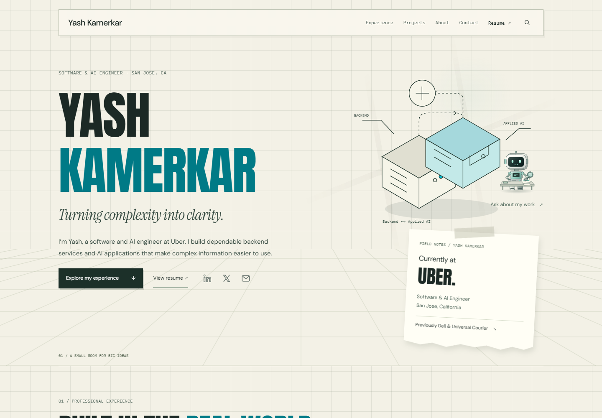
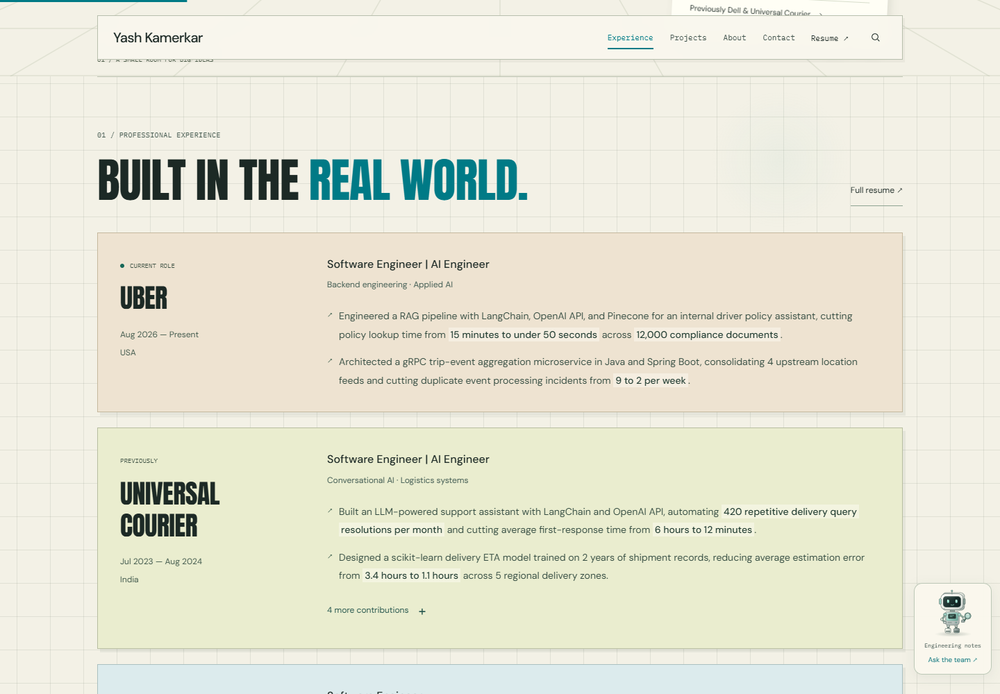
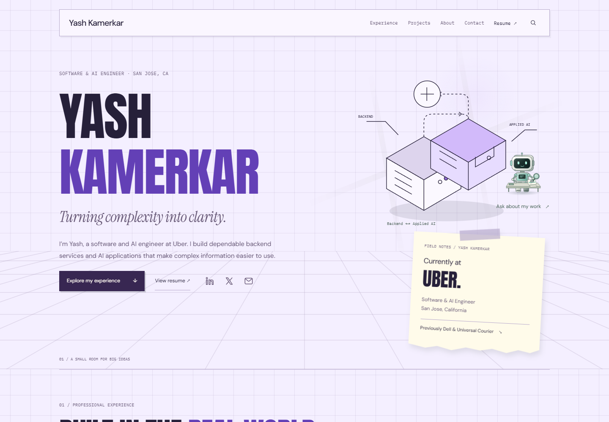
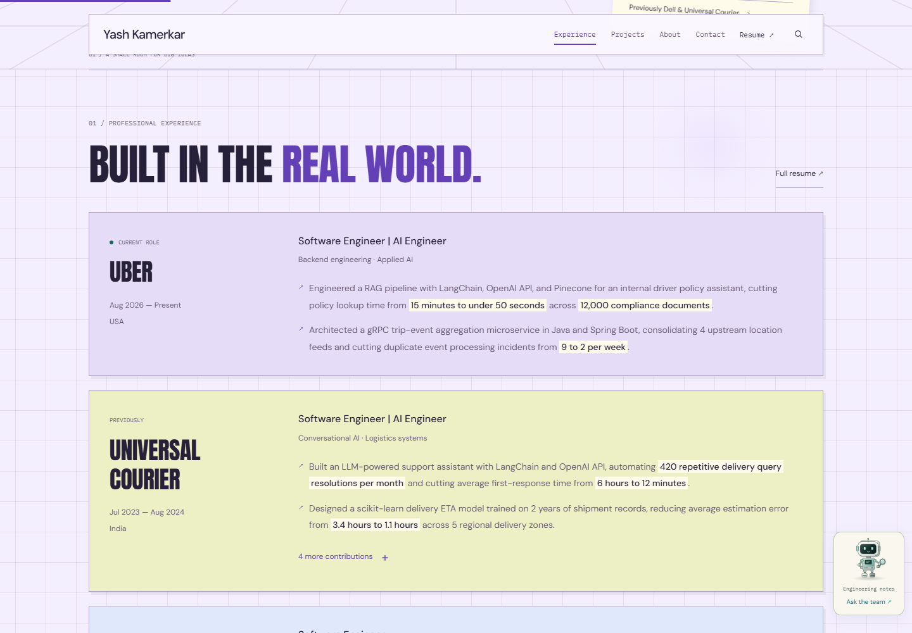
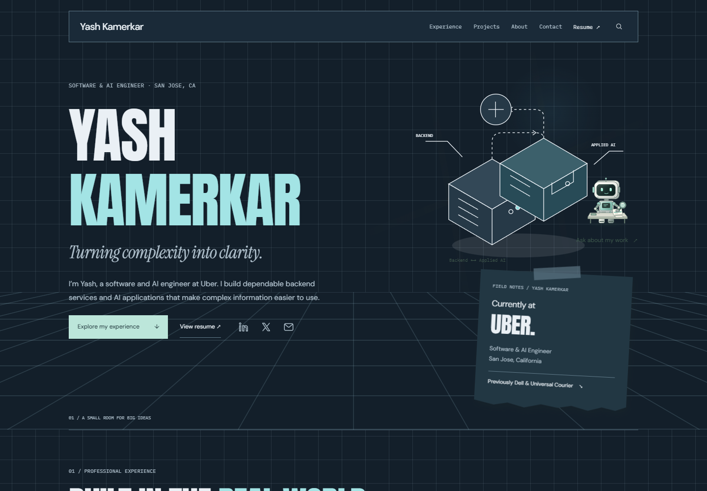
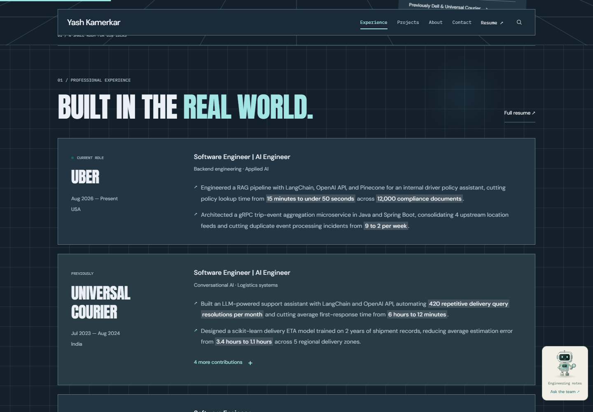

Same content and layout — compare the first impression and the experience section. These are review options, not permanent website modes.
Cream, deep teal, warm sand paper notes.


Lilac, ink violet, a touch of butter yellow.


Navy, ice cyan, illuminated workbench.

